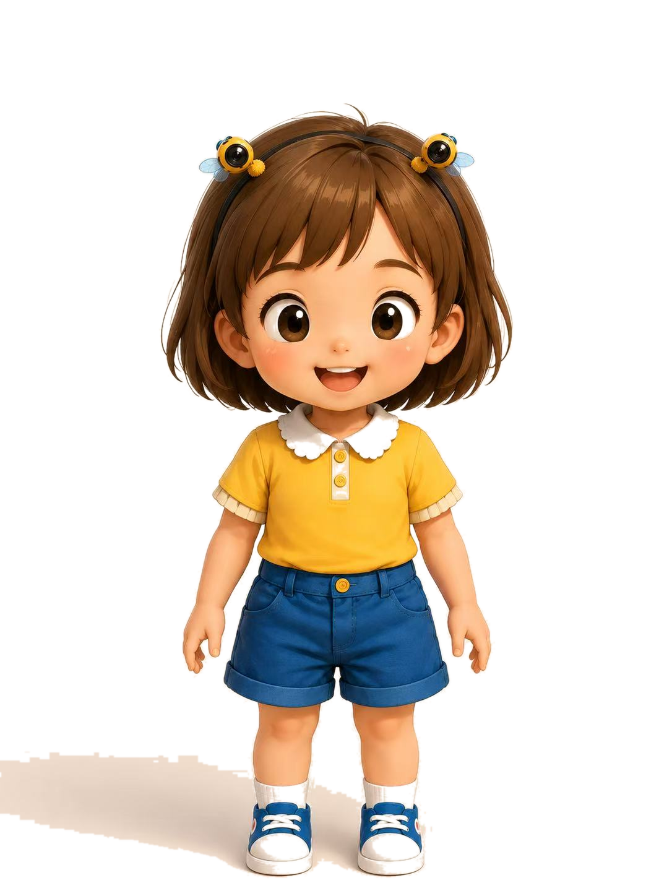
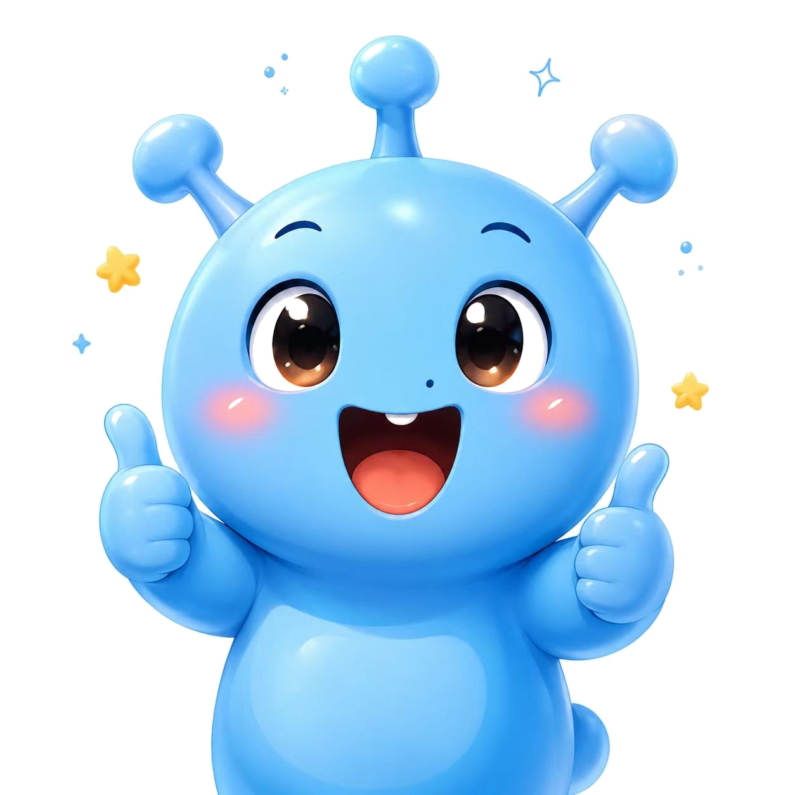

Leta · Age 10
勇敢、好奇、会照顾别人情绪的小小未来建造者。
Leta 是孩子的代入角色。她不总是知道答案，但她愿意观察、尝试、追问，也愿意在演讲前深呼吸，把自己的想法说出来。
Leta & Milo
角色图片严格使用项目 assets 中的参考图。黄色小女孩是 Leta，蓝色小精灵/机器人感伙伴是 Milo；他们承担故事连接、情绪陪伴和任务引导，不使用随机卡通形象替代。

Leta · Age 10
Leta 是孩子的代入角色。她不总是知道答案，但她愿意观察、尝试、追问，也愿意在演讲前深呼吸，把自己的想法说出来。

Milo · AI Companion
Milo 不替孩子完成创造，而是提示问题、记录想法、提醒安全，并用温柔的方式帮助孩子把科学和英文讲清楚。